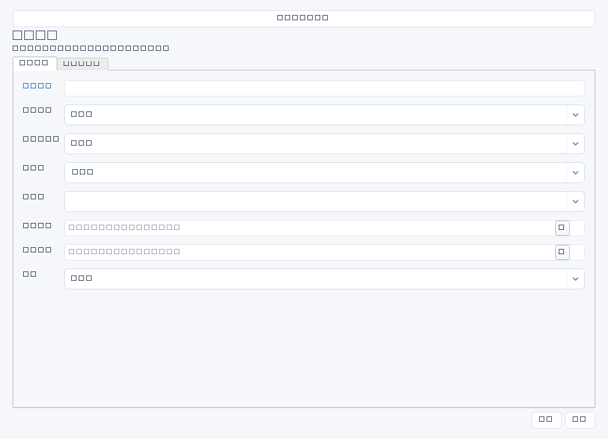
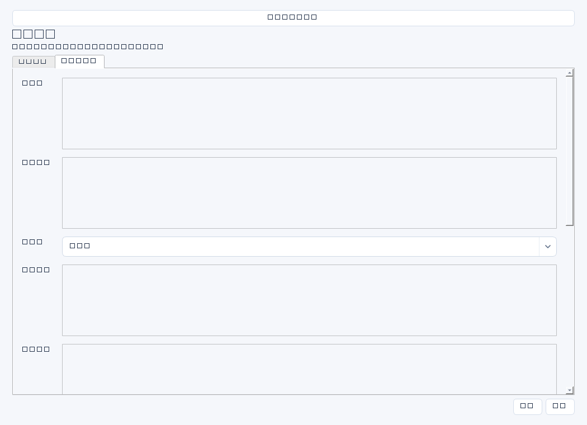

| 操作 / 字段 | 详细说明 |
|---|---|
| 顶部标题栏 | 自绘QSS标题栏；拖动、双击最大化、最小化、还原与关闭。样式在itmanager/resources/titlebar.qss，重启桌面生效。编辑弹窗保留原生标题栏。 |
| 刷新 | 重新取得记录与配置；业务列表保留当前筛选和选中项。加载失败看状态栏，不认为空页面就是数据库清空。 |
| 连接设置 | 输入服务地址及令牌文件；远程必须HTTPS。后台操作进行中禁止切换连接。切换会清除旧服务的视图缓存。 |
| 分组导航 | 日常工作、项目规划、人员、IT台账、汇报AI、系统设置。点击组展开；专项工作空间位于项目规划。 |
| 搜索与筛选 | 搜索所有字段；按责任人/姓名、状态、日期区间组合。业务日期按模块字段顺序选取，并非同时匹配所有日期。勾选日期开关后才生效。 |
| 分页与排序 | 每页100条；排序和筛选在已全量加载的数据上执行，不能视为服务端分页或无限数据规模承诺。 |
| 详情 | 单击选中显示完整字段及版本，长列表不展开全部证据。HTTP/HTTPS链接需确认；不会自动打开本地文件。 |
| 新建 / 编辑 | 基础与详细信息分组；首名称/姓名必填，日期可用日历。保存失败保留输入；保存中禁止修改。状态不是复杂审批引擎。 |
| 归档 / 历史 | 归档不是删除，被其他有效记录引用时拒绝。历史展示保存快照，不能直接一键还原历史。 |
| 关联工作 / 后续任务 | 按关联ID或负责人姓名辅助查找；同名须核对。后续任务需勾选确认，产生待执行任务，不发通知。 |



